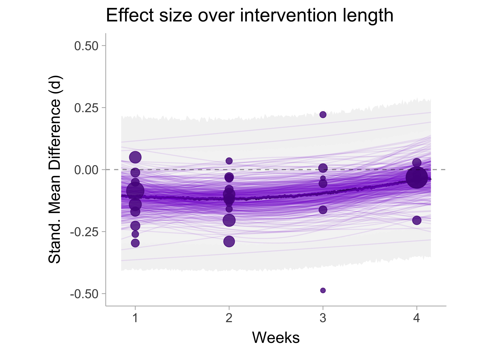
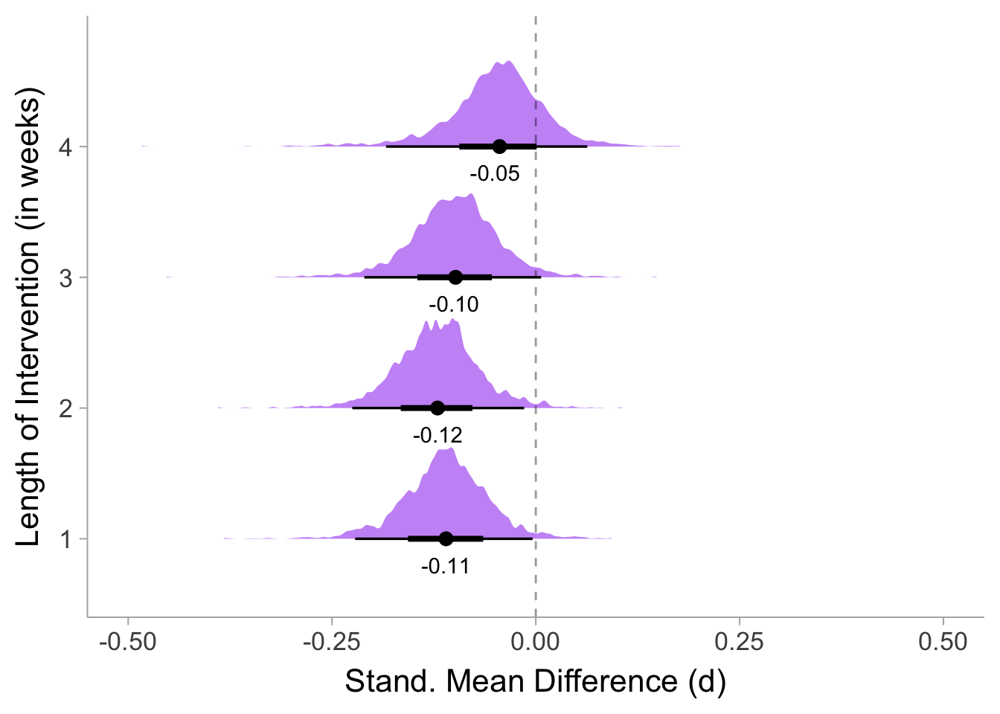
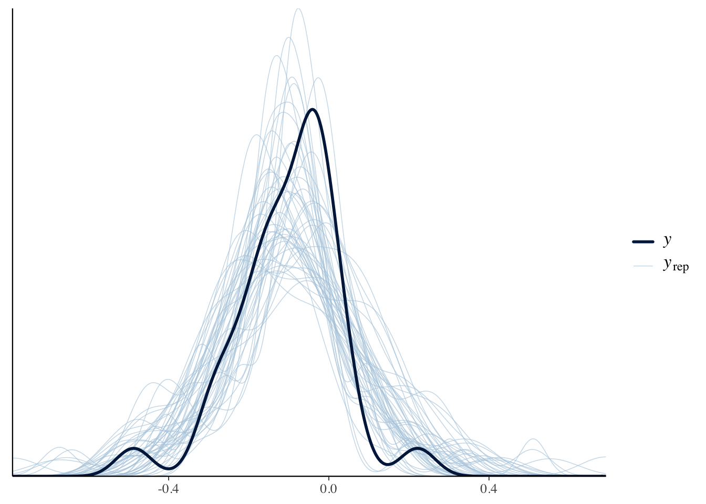
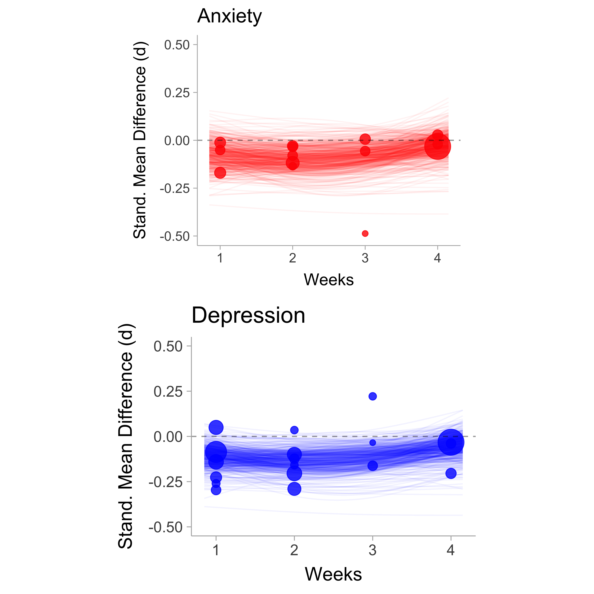
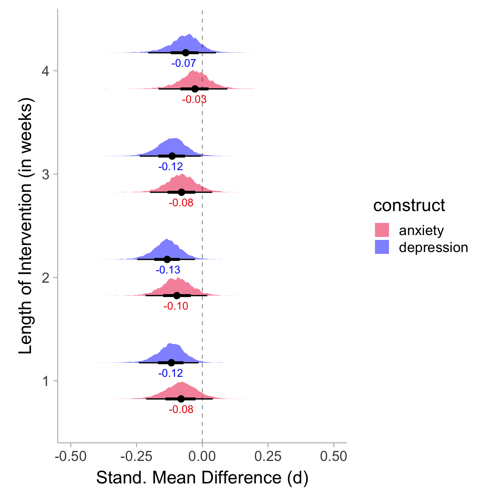

options(buildtools.check = function(action) TRUE )
library(metafor)
library(brms)
library(tidyverse)
library(clubSandwich)
library(mgcv)
library(tidybayes)
library(modelr)
library(ggdist)
df <- read.csv("social_media_data.csv")
# assume .80 pre-post correlation
r <- .80
dat <- df %>%
mutate(d_raw = ((reduction_mean_post- reduction_mean_pre) - (control_mean_post - control_mean_pre)) / sqrt( ( (reduction_n - 1)*(reduction_sd_pre^2) + (control_n - 1)*(control_sd_pre^2) ) / (reduction_n + control_n - 2) ),
nu = control_n+reduction_n-2,
c_factor = ifelse(gamma(nu/2)== Inf,1,sqrt(2/nu)*gamma(nu/2)/gamma((nu-1)/2)),
d = d_raw * c_factor,
v = (2*(1-( (reduction_n*r+control_n*r)/(reduction_n + control_n))) * ((reduction_n+control_n)/(reduction_n*control_n)) * (1 + (d^2 / (2*(1 - ((reduction_n*r+control_n*r)/(reduction_n+control_n))) * ((reduction_n+control_n)/(reduction_n*control_n))))) - d^2)* c_factor^2,
sei = sqrt(v))The Effect of Social Media Reduction on Depression and Anxiety: A Meta-Analysis of RCTs
Abstract
This site contains the most up to date database on RCTs of effects of social media’s effect on depression and anxiety.Contributors: Minnea Rutar and Sabrina Norwood.
Design of the studies
The studies included in this meta-analysis are RCTs which randomize participants into two (or more) arms. Typically in these studies, there are two arms: 1) a social media reduction intervention and 2) a control (i.e., using social media as usual). The period of the reduction will vary between studies (usually around 1-4). This meta-analysis extracts pre and post-test effects and any mid-intervention effects. The timeline for a typical intervention is as follows:
\[ \textrm{pre-test (Week 0)} \rightarrow \textrm{mid-test (0<Week<N)}\rightarrow \,...\,\rightarrow \textrm{post-test (Week N)} \]
Outcomes of interest are measures of depression (e.g., BDI) and/or anxiety (e.g., GAD).
Search
Current search is just from the studies collected by in this meta-analysis by Christopher Ferguson. New studies or study data can be submitted to me at matthewbjane@gmail.com.
Effect size calculation
Effect sizes are calculated using the method described in a paper by Scott B. Morris on pre-post-control effects. Particularly, we want to take the reduction-control difference in the pre-post change. Each study will have a pre-test mean for the control group \(\mu^C_0\) and the reduction group \(\mu^R_0\) as well as a post-test mean: \(\mu^C_1\) and \(\mu^R_1\). Therefore the change between pre and post is \(\mu_1 - \mu_0\). To account for different scales across studies, the we will standardize the difference in the mean change between reduction and control groups by the within-group pre-test standard deviation \(\sigma_0\),
\[ \delta = \frac{(\mu^R_1 - \mu^R_0) - (\mu^C_1 - \mu^C_0)}{\sigma_0}, \tag{1}\]
and thus \(\delta\) is our effect size of interest. This formulation of the standardized mean difference (SMD) has a lot of nice properties, most notably,
In RCTs pre-test standard deviations should be in expectation the same, and therefore the assumption of equal variance between arms should be met in most cases. Note here that we use complete cases (only subjects that underwent the intervention), so attrition effects could potentially violate this assumption (violations in this assumption probably have to be severe to make much of a difference).
Controlling for baseline. As I mentioned in the first point, attrition effects may cause differences in baseline means between groups even if it is an RCT. To hopefully account for some types of attrition effects, we subtract the baseline mean (i.e., pre-test mean) from the post-test mean within the reduction and control groups.
In each study sample, we have to extract and calculate sample estimates of the SMD. Our formula for a sample estimate of \(\delta\) can be expressed as,
\[ d = \frac{(m^R_1 - m^R_0) - (m^C_1 - m^C_0)}{s_0} \times c(\nu), \tag{2}\] where \(c(\nu) = \sqrt{2/\nu}\times\left(\Gamma[\nu/2]/\Gamma[(\nu-1)/2]\right)\) is Hedges’ small sample correction factor and \(\nu\) is the degrees of freedom \(\nu = n_R+n_C -2\). Since we have two samples of the pre-test standard deviation, we have to obtain \(s_0\) by pooling the reduction and control group’s variances,
\[ s_0 = \sqrt{\frac{(n_R-1)\left(s^R_0\right)^2 + (n_C-1)\left(s^C_0\right)^2}{n_R + n_C - 2}} \]
To obtain the precision of the of the estimate we can use
Handling Dependency
There are two sources of sample dependency in this analysis: multiple outcomes (i.e., anxiety/depression) and multiple time-points (e.g., week 1 and week 2). Two handle this problem we will use robust variance estimation to account for time dependency and
Data extraction of missing information
- When data can not be extracted from the primary article, the corresponding author is contacted.
- When pre-test information is unavailable (e.g., they were never assessed at baseline) then we assume that the baseline scores are equal between groups (\(\mu_0 = \mu^R_0 = \mu^C_0\)) which reduces the numerator of Equation 1 to be \((\mu^R_1 - \mu^R_0) - (\mu^C_1 - \mu^C_0) = \mu^R_1 - \mu_0 - \mu^C_1 + \mu_0 = \mu^R_1 - \mu^C_1\). The denominator will be the post-test standard deviation and therefore we will assume that the post-test standard deviation is equal to the pre-test standard deviation.
- When necessary statistical information isn’t reported directly, alternative statistics are used to triangulate to the needed statistics (either via simulation or analytically).
Analysis and Results
Modeling Length of Intervention
The model below fits a regresses the SMD on length of the intervention (in weeks) using a Generalized Additive Model (GAM). Essentially, we model the observed effects \(d_{i_e}\), where a non-linear function \(f\) of \(W_{i_e}\) (length of the intervention in weeks) captures the conditional mean of true effects \(f(W_{i_e}) = \mathbb{E}[\delta_{i_e}\,|\,W_{i_e}]\). The estimated the model can be expressed as
\[ d_{i_e}\, |\, W_{i_e} \sim \mathcal{N}\left(f(W_{i_e}), \Sigma\right) \]
The covariance matrix \(\Sigma\) has non-zero off-diagonal elements when effects are from the same sample (\(d_{i_1}...d_{i_q}\)) which accounts for sample dependency. The assumption here is that within-sample effects are homogenous after conditioning on the length of the intervention (\(W_{i_e}\)). Important to note that this implies that depression and anxiety effects are homogenous within-studies, but we will differentiate these in the next section.
In R, we can use the brms [@brms] and mgcv [@mgcv] packages to fit a Bayesian meta-analytic GAM.
prior <- default_prior(d|se(sei) ~ s(weeks, k=2) + (1|sample_id),
data = dat, family = gaussian())
prior$prior[[which(prior$class=="Intercept")]] <- "normal(0,1)"
mdl <- brm(d|se(sei) ~ s(weeks, k = 2) + (1 | sample_id),
data = dat,
iter = 4000,
prior = prior,
sample_prior = "yes",
file = "average_model",
warmup = 200,
control = list(max_treedepth = 15),
cores = 2,
file_refit = "on_change")Model Results
We can visualize the model results by plotting out the posterior draws over time. The vertical axis denotes the SMD where a positive value means more depression/anxiety in the reduction group (i.e., treatment is detrimental) whereas a negative value denotes a reduction in anxiety/depression in the reduction group (i.e., treatment is beneficial). The horizontal axis is the length of the intervention, or rather, the amount of time social media has been reduced for.

We see a very subtle trend toward zero after an initial benefit at 1-2 weeks. Let us look at the average effect size estimates at each week (weeks 1,2,3,4).

There seems to not be good evidence that withdrawal effects are present (week 1 does not show substantially lower effects than other weeks) or that there is any substantial increase in the effect at a given week. Week 4 appears to have the lowest average effect at \(\bar{\delta}\) = -0.15.
Diagnostics
The posterior predictive check is just okay, it seems that the model predicts a little more variability in the effect sizes than what is observed. This may mean that the pre/post correlations are under-estimated thus making the variability.
pp_check(mdl,ndraws=50)
Anxiety vs Depression
We can make a slightly more complex model that looks at the interaction of the temporal trend and the construct (anxiety and depression). When running the interaction model with the following formulation, the model did not converge (R hat value was >2.8 for all the interaction terms) and is likely far too complex to model with this small of a data set. Instead I just included the main effect of construct without the product term and the model thankfully converged. The model of the multiple regression with the main effects for s(weeks) and construct is shown below.
prior <- default_prior(d|se(sei) ~ s(weeks, k=2) + construct + (1|sample_id),
data = dat, family = gaussian())
prior$prior[[which(prior$class=="Intercept")]] <- "normal(0,1)"
mdl_construct <- brm(d|se(sei) ~ s(weeks, k=2) + construct + (1 | sample_id),
data = dat,
iter = 4000,
prior = prior,
sample_prior = "yes",
warmup = 200,
file = "construct_model",
control = list(max_treedepth = 15),
cores = 2,
file_refit = "on_change")
We can see we see very similar trends for both the depression and anxiety plots. Similar to the overall mental health model, here we will plot out the week by week estimates of the average effect separated by anxiety (in red) and depression (in blue).

Anyways, those are the results for now, the data and code are all publicly available in my MatthewBJane.github.io repository.
Session Info
sessionInfo()R version 4.4.0 (2024-04-24)
Platform: aarch64-apple-darwin20
Running under: macOS Sonoma 14.1
Matrix products: default
BLAS: /Library/Frameworks/R.framework/Versions/4.4-arm64/Resources/lib/libRblas.0.dylib
LAPACK: /Library/Frameworks/R.framework/Versions/4.4-arm64/Resources/lib/libRlapack.dylib; LAPACK version 3.12.0
locale:
[1] en_US.UTF-8/en_US.UTF-8/en_US.UTF-8/C/en_US.UTF-8/en_US.UTF-8
time zone: America/New_York
tzcode source: internal
attached base packages:
[1] stats graphics grDevices datasets utils methods base
other attached packages:
[1] ggdist_3.3.2 modelr_0.1.11 tidybayes_3.0.7
[4] mgcv_1.9-1 nlme_3.1-164 clubSandwich_0.5.11
[7] lubridate_1.9.3 forcats_1.0.0 stringr_1.5.1
[10] dplyr_1.1.4 purrr_1.0.2 readr_2.1.5
[13] tidyr_1.3.1 tibble_3.2.1 ggplot2_3.5.1
[16] tidyverse_2.0.0 brms_2.22.0 Rcpp_1.0.12
[19] metafor_4.6-0 numDeriv_2016.8-1.1 metadat_1.2-0
[22] Matrix_1.7-0
loaded via a namespace (and not attached):
[1] tidyselect_1.2.1 svUnit_1.0.6 viridisLite_0.4.2
[4] farver_2.1.2 loo_2.8.0 fastmap_1.2.0
[7] tensorA_0.36.2.1 mathjaxr_1.6-0 digest_0.6.36
[10] timechange_0.3.0 lifecycle_1.0.4 StanHeaders_2.32.10
[13] magrittr_2.0.3 posterior_1.6.0 compiler_4.4.0
[16] rlang_1.1.4 tools_4.4.0 utf8_1.2.4
[19] yaml_2.3.8 knitr_1.47 labeling_0.4.3
[22] bridgesampling_1.1-2 htmlwidgets_1.6.4 pkgbuild_1.4.4
[25] plyr_1.8.9 abind_1.4-8 tinytable_0.5.0
[28] withr_3.0.0 grid_4.4.0 stats4_4.4.0
[31] fansi_1.0.6 colorspace_2.1-0 inline_0.3.19
[34] scales_1.3.0 cli_3.6.3 mvtnorm_1.3-1
[37] rmarkdown_2.27 generics_0.1.3 RcppParallel_5.1.9
[40] rstudioapi_0.16.0 reshape2_1.4.4 tzdb_0.4.0
[43] rstan_2.32.6 splines_4.4.0 bayesplot_1.11.1
[46] parallel_4.4.0 matrixStats_1.4.1 vctrs_0.6.5
[49] sandwich_3.1-1 jsonlite_1.8.8 hms_1.1.3
[52] arrayhelpers_1.1-0 glue_1.7.0 codetools_0.2-20
[55] cowplot_1.1.3 distributional_0.4.0 stringi_1.8.4
[58] gtable_0.3.5 QuickJSR_1.3.1 munsell_0.5.1
[61] pillar_1.9.0 htmltools_0.5.8.1 Brobdingnag_1.2-9
[64] R6_2.5.1 evaluate_0.24.0 lattice_0.22-6
[67] backports_1.5.0 broom_1.0.6 renv_0.17.3
[70] rstantools_2.4.0 coda_0.19-4.1 gridExtra_2.3
[73] checkmate_2.3.1 xfun_0.45 zoo_1.8-12
[76] pkgconfig_2.0.3 Citing R packages
The following packages were used in this post:
brms[@brms]mgcv[@splines]tidyverse[@tidyverse]ggdist[@ggdist]modelr[@modelr]tidybayes[@tidybayes]